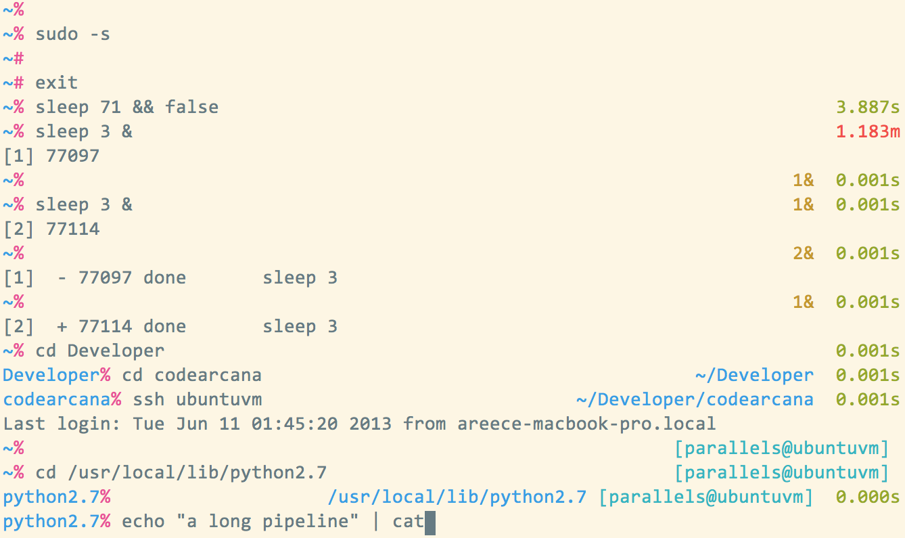
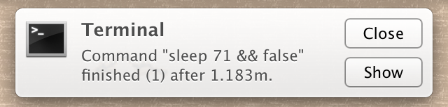

I spent some time this week switching from bash to zsh (I really enjoy
zsh - I treat it as bash with floating point arithmetic and other
niceities)
and making a theme for
oh-my-zsh
for myself. I'm not quite done, but I am pretty pleased with
the results.
It differs from most themes in the following ways:
- Explicitly not having git or other version control info in the prompt (I very rarely don't know what branch I am in and when I care about the status of git, I usually care about which files are affected).
- Showing the execution time and status of the last command executed.
- Displaying a notification (on Mac OSX) if a (long running) command completes and the terminal isn't in the foreground.
First, a screenshot:
 
And some more detailed explanation:
- By default, the prompt is very minimalist (the current directory and a % or a # depending on the privileges of the shell). Most extra information is hidden unless it is useful.
- In the right hand prompt, the execution time of the last command is displayed. It is colored green if the command returned successfully and red otherwise.
- The number of background processes is displayed (but only if there are background processes).
- If the path to the current directory is long, it is also displayed in the right hand side.
- The user and hostname are displayed (only) if logged in over
ssh. - Since this is
zsh, the right hand prompt disappears if the line is long enough.
You'll note that I don't have git directory status in the prompt, since I
don't think they are worth it.
I very rarely don't know what branch I am on and when I care about the status
of git, I usually care about which files are affected
Source is in my fork of oh-my-zsh.
Comments !